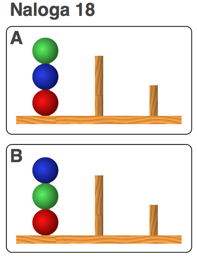

<!doctype html>
<html>

    <head>
        <title>Tower of London</title>
        <!-- Load jQuery -->
        <script src="http://ajax.googleapis.com/ajax/libs/jquery/1.10.2/jquery.min.js"></script>
        <!-- Load the jspsych library and plugins -->
        <script src="scripts/jspsych.js"></script>
        <script src="scripts/plugins/jspsych-text.js"></script>
        <script src="scripts/plugins/jspsych-single-stim.js"></script>
        <!-- Load the stylesheet -->
        <link href="tol.css" type="text/css" rel="stylesheet"></link>
    </head>

    <body>
        <div id="jspsych_target"></div>
    </body>

    <script>
        // Experiment parameters
        
        // original contents: img/congruent_left.gif", "img/congruent_right.gif", "img/incongruent_left.gif", "img/incongruent_right.gif"
        var stimuli = [
        "img/tolimg/AN01.png",
        "img/tolimg/AN02.png",
        "img/tolimg/AN03.png",
        "img/tolimg/AN04.png",
        "img/tolimg/AN05.png",
        "img/tolimg/AN06.png",
        "img/tolimg/AN07.png",
        "img/tolimg/AN08.png", 
        "img/tolimg/AN09.png",  
        "img/tolimg/AN10.png",  
        "img/tolimg/AN11.png",
        "img/tolimg/AN12.png",  
        "img/tolimg/AN13.png",  
        "img/tolimg/AN14.png",  
        "img/tolimg/AN15.png",  
        "img/tolimg/AN16.png",  
        "img/tolimg/AN17.png",  
        "img/tolimg/AN18.png",  
        "img/tolimg/AN19.png",  
        "img/tolimg/AN20.png",  
        "img/tolimg/AN21.png",  
        "img/tolimg/AN22.png"
        ];

        var n_trials = stimuli.length;
        
        var stimuli_types = [
        2,
        2,
        3,
        3,
        2,
        1,
        3,
        4,
        1,
        4,
        3,
        4,
        1,
        2,
        3,
        2,
        1,
        4,
        1,
        4,
        6,
        5
        ];

        // Experiment Instructions
        var welcome_message = "<div id='instructions'><p>Welcome to the " +
            "experiment. Press enter to begin.</p></div>";

        var instructions = "<div id='instructions'><p> You will see a " +
            "series of images that look similar to this:</p><p>" +
            "</p><p style = 'text-align: left;'>Your task is to " +
            "estimate how many moves of the disks you would need to get " +
            "from the starting point in the first image to the final  " +
            "layout in the second image. Press the corresponding " +
            "key on your keyboard to give your response.</p><p>Press enter to start.</p>";

        var debrief = "<div id='instructions'><p>Thank you for " +
            "participating!  Press enter to see the data.</p></div>";

        // Generating Random Order for Stimuli
        //FIND OUT how stimuli are organized into an array! HERE they are taken in random order from stimuli[] until twenty are met
        //stimuli are organized into array IN AN ORDER as var stimuli = [] inside the script. Iterate through it one by one.


        /*var stimuli_random_order = [];
        var opt_data = [];

        for (var i = 0; i < n_trials; i++) {
            var random_choice = Math.floor(Math.random() * stimuli.length);

            stimuli_random_order.push(stimuli[random_choice]);
            opt_data.push({
                "stimulus_type": stimuli_types[random_choice]
            });
        }*/

        //Korjaa taa niin ettei se riko koko paskaa
        var stimuli_random_order = []; //not so random :3 
        var opt_data = [];

        for (var i = 0; i < n_trials; i++) {
            stimuli_random_order.push(stimuli[i]);
            opt_data.push({
                "stimulus_type": stimuli_types[i]
            });

        }

        // Define experiment blocks
        var instruction_block = {
                type: "text",
                text: [welcome_message, instructions],
                timing_post_trial: 250
            };

        var test_block = {
                type: "single-stim",
                //change order to set from stim 1 to final stim! 
                //changing this from stimuli_random_order to stimuli BREAKS IT
                stimuli: stimuli_random_order,
                //change choices to key presses corresponding to number keys!
                choices: [48, 49, 50, 51, 52, 53, 54, 55, 56, 57],
                data: opt_data
            };

        var debrief_block = {
                type: "text",
                text: [debrief]
            };


        jsPsych.init({
            display_element: $('#jspsych_target'),
            experiment_structure: [instruction_block, test_block, debrief_block],
            on_finish: function(data) {
                $("#jspsych_target").append($('<pre>', {
                    html: jsPsych.dataAsCSV()
                }));

                jsPsych.saveCSVdata("data.csv");
            }
        });
    </script>
</html>